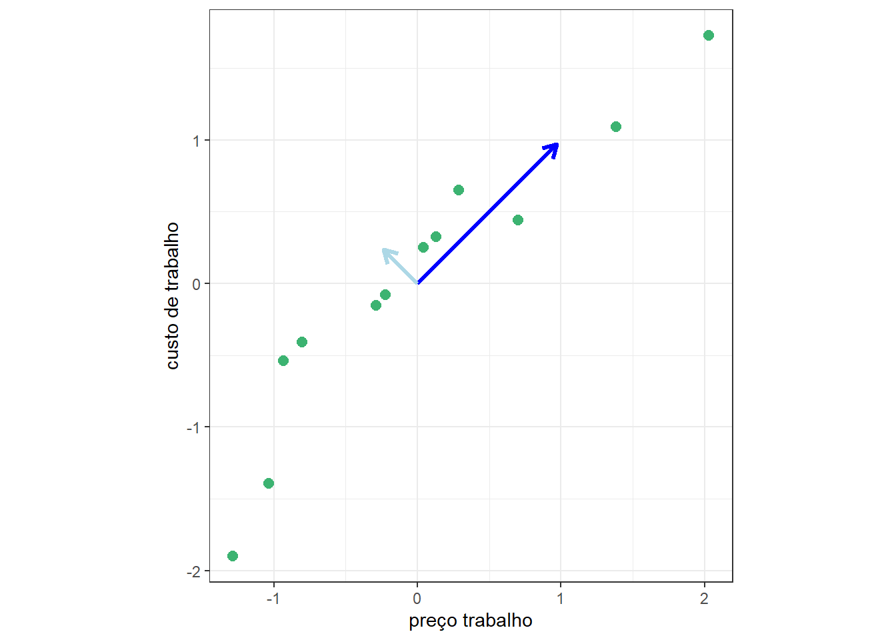
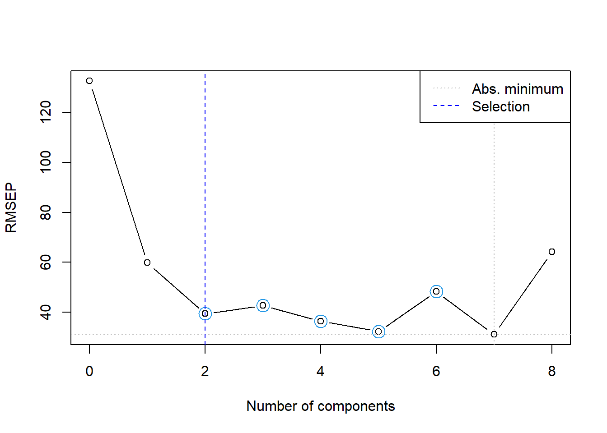

7 Regressão por Componentes Principais
7.1 Intuição inicial
Seja um conjunto de \(n\) observações de \(k\) variáveis regressoras, \(x_1, x_2, \dots, x_k\) ou independentes, representado matricialmente conforme segue:
\[ \mathbf{X} = \begin{bmatrix} x_{11} & x_{12} & \dots & x_{1k} \\ x_{21} & x_{22} & \dots & x_{2k} \\ \vdots & \vdots & \ddots & \vdots \\ x_{n1} & x_{n2} & \dots & x_{nk} \\ \end{bmatrix}. \]
Um modelo de regressão múltipla para uma resposta dita dependente de \(x_1, x_2, \dots, x_k\) pode ser escrito conforme segue.
\[ \hat y = \beta_0 + \beta_1x_1 + \beta_2x_2 + \dots \beta_kx_k \]
De forma matricial o modelo de regressão múltipla é expresso segundo a Equação Equação 7.1.
\[ \hat {\mathbf{y}} = \mathbf{X}\beta \tag{7.1}\]
Em diversos problemas de regressão as variáveis regressoras podem apresentar multicolineariedade, de forma a acarretar na inflação dos coeficientes de regressão. Além dos métodos de regularização como a regressão rígiga e LASSO há abordagens de regressão que visam tratar a correlação entre os preditores, evitando o problema de inflação dos coeficientes. A regressão por componentes principais visa obter uma matriz de com variáveis não correlacionadas \(\mathbf W\) a partir de \(\mathbf{X}\) de forma a obter um modelo em função de tais variáveis, ao invés das originais. Tal modelo pode ser expresso conforme Equação 7.2, onde \(\gamma\) é o velor de \(p\times 1\) coeficientes de regressão. Ademais a matriz \(\mathbf W\) retém boa parte da informação de \(\mathbf{X}\), porém apresenta menor número de variáveis (colunas), \(\mathbf{W}_{n\times p}\), \(p<k\).
\[ \hat {\mathbf{y}} = \mathbf{W}\gamma \tag{7.2}\]
Para obter \(W\) pode-se usar da análise de componentes principais (principal component analysis - PCA). Porém, antes é necessário entender a decomposição por valores singulares (singluar value decomposition - SVD), um dos métodos disponíveis para realizar a PCA.
7.2 Decomposição em valores singulares
A SVD é um método de fatoração de matrizes da álgebra linear que permite a decomposição de uma matriz em três outras, conforme Equação 7.3, onde \(\mathbf U_{n \times n}\) é a matriz de vetores singulares esquerda, \(\mathbf L_{n \times k}\) é a matriz de valores singulares e \(\mathbf V_{k \times k}\) é a matriz de vetores singulares direita.
\[ \mathbf X = \mathbf U \mathbf L \mathbf V^T \tag{7.3}\]
cat(” \[ \mathbf{X} = \begin{bmatrix} \color{red}{u_{11}} & \color{blue}{u_{12}} & \color{green}{\cdots} & \color{magenta}{u_{1n}} \\ \color{red}{u_{21}} & \color{blue}{u_{22}} & \color{green}{\cdots} & \color{magenta}{u_{2n}} \\ \color{red}{\vdots} & \color{blue}{\vdots} & \color{green}{\ddots} & \color{magenta}{\vdots} \\ \color{red}{u_{n1}} & \color{blue}{u_{n2}} & \color{green}{\cdots} & \color{magenta}{u_{nn}} \\ \end{bmatrix} \begin{bmatrix} \color{orange}{\ell_{1}} & 0 & 0 & \cdots & 0 \\ 0 & \color{cyan}{\ell_{2}} & 0 & \cdots & 0 \\ 0 & 0 & \color{purple}{\ell_{3}} & \cdots & 0 \\ \vdots & \vdots & \vdots & \ddots & \vdots \\ 0 & 0 & 0 & \cdots & \color{brown}{\ell_{k}} \\ 0 & 0 & 0 & \cdots & 0 \\ \vdots & \vdots & \vdots & \vdots & \vdots \\ 0 & 0 & 0 & \cdots & 0 \\ \end{bmatrix} \begin{bmatrix} \color{orange}{v_{11}} & \color{orange}{v_{21}} & \color{orange}{\cdots} & \color{orange}{v_{k1}} \\ \color{cyan}{v_{12}} & \color{cyan}{v_{22}} & \color{cyan}{\cdots} & \color{cyan}{v_{k2}} \\ \vdots & \vdots & \ddots & \vdots \\ \color{brown}{v_{1k}} & \color{brown}{v_{2k}} & \color{brown}{\cdots} & \color{brown}{v_{kk}} \\ \end{bmatrix} \]
Na PCR as matrizes \(\mathbf L_{n \times k}\) e \(\mathbf V_{k \times k}\) são mais importantes, visto que a última determinará as novas direções ou eixos das variáveis transformadas, enquanto a primeira a importância destas, uma vez que \(\ell_1 \geq \ell_2 \geq \dots \geq l_k\). A matriz \(\mathbf W\) será obtida a partir da PCA da matriz de correlação de \(\mathbf X\).
7.3 Análise de componentes principais
Seja \(\mathbf R = \mathbf X^T\mathbf X/(n-1)\) a matriz de correlação de \(\mathbf X\), onde \(\mathbf X\) tem suas colunas padronizadas, isto é, \(x^*_j = (x_j-\mu_j)/\sigma_j\).
Sejam os dados de custos de manufatura apresentados no capítulo sobre regressão rígida e Lasso. Conforme observado, os preditores apresentam multicolineariedade, ou seja, alta correlação aos pares, o que acarretou na regressão múltipla a inflação dos coeficientes. A Figura 7.1 plota aos pares as observações de preço e custo de trabalho, consideradas como preditores para prever o custo. O coeficiente de correlação de Pearson para tais variáveis é igual a 0,886. Logo, elas apresentam alta similaridade. Realizando PCA obtém-se novas variáveis ou direções, rotacionando as variáveis originais. A partir destas novas direções pode-se projetar as observações originais e obter um conjunto de dados transformado com variáveis não correlacionadas. Cada uma destas consiste em uma combinação linear das variáveis originais. Ademais, a primeira variável explicará maior proporção da variabilidade dos dados que a segunda e assim sucessivamente em casos onde há mais variáveis. Logo, pode-se considerar uma variável tansformada para explicar as duas originais, sendo esta plotada com, a seta azul escura.
A análise de componentes principais de \(\mathbf X^T\mathbf X\) via SVD fica:
\[ \begin{align} \mathbf X^T\mathbf X &= (\mathbf U \mathbf L \mathbf V^T)^T(\mathbf U \mathbf L \mathbf V^T) \\ \mathbf X^T\mathbf X &= \mathbf V \mathbf L^T \mathbf U^T\mathbf U \mathbf L \mathbf V^T \\ \mathbf X^T\mathbf X &= \mathbf V \mathbf L^T \mathbf L \mathbf V^T \\ \mathbf X^T\mathbf X &= \mathbf V \mathbf L^2 \mathbf V^T \\ \end{align} \]
Faz-se \(\mathbf W = \mathbf X \mathbf V\). Porém, não são consideradas todas as \(k\) colunas de \(\mathbf V\), mas apenas as \(p\) primeiras. Para determinar \(p\), sejam \(\lambda_1 \geq \lambda_2 \geq \dots \lambda_k\) com \(\lambda_j=\ell_j^2/(n-1)\), \(j=1,\dots,k\) os valores singulares de \(\mathbf R\). Sugere-se selecionar os \(p\) primeiros autovetores de \(\mathbf V\) tal que a Equação 7.4
\[ \frac{\sum_{j=1}^p \lambda_j}{\sum_{j=1}^k \lambda_j} \tag{7.4}\]
seja maior que, por exemplo, 0,8, de forma a reter no mínimo 80% da informação das variáveis originais. Outra forma, talvez a mais adequada, para selecionar o número adequado de autovetores considerados é via validação cruzada. Porém antes, é importante entender como transformar \(\mathbf X\) em \(\mathbf W\) via \(\mathbf V\).
7.4 Regressão por componentes principais
A matriz de variáveis transformadas \(\mathbf W\), pode ser obtida via Equação 7.5. Uma vez que \(\mathbf V\) tem ordem \(k \times p\), \(p < k\), garante-se a redução de dimensionadade além da ausência de correlação das variáveis transformadas armazenadas em \(\mathbf W\).
\[ \mathbf W = \mathbf X \mathbf V \tag{7.5}\]
Os coeficientes de regressão por componentes principais podem ser obtidos por mínimos quadrados ordinários conforme Equação 7.6.
\[ \gamma = (\mathbf W^T\mathbf W)^{-1}\mathbf W^T \mathbf y \tag{7.6}\]
Ainda considerando os dados de custos de manufatura, o fator de inflação de variâncias para o \(j\)-ésimo coeficiente, \(j=1,\dots,k\), pode ser obtido pela Equação 7.7, onde \(R^2_j\) é coeficiente de determinação múltipla da regressão para a \(x_j\) em função dos regressores. O \(VIF_j\) expressa o quanto o coeficiente é inflado pela correlação entre \(x_j\) e os outros preditores.
\[ VIF_j = \frac{1}{1-R^2_j} \tag{7.7}\]
A seguir expõe-se o VIF dos coeficientes relacionados às variáveis regressoras consideradas para prever o custo. Em geral um VIF maior que 10 indica que há séria multicolieariedade nos dados. Logo, no caso dos preditores para o custo de manufatura, há multicolineariedade altíssima.
capitalcost laborcost energycost materialscost capitalprice
19882.52875 210216.61405 7623.81460 271415.93968 81.76512
laborprice energyprice materialsprice
163.35521 49.89049 131.51254 Seja um modelo de regressão por componentes principais para tais dados, considerando metade dos dados disponíveis para treino. A seguir observa-se o erro da validação cruzada para buscar o número de componentetes, além do percentual da variância explicada, conforme Equação 7.4. Duas componentes já retém mais de 90% da variabilidade dos preditores originais. A Figura 7.2 ilustra um gráfico do resultado do erro de validação cruzada segundo o número de componentes ou novas variáveis, \(p\), a serem utilizados na regressão via PCR. Pode-se observar que neste caso recomenda-se selecionar 2 componentes, apesar de que com 4, 5 ou 7 componentes o erro foi mais baixo, entretanto, recomenda-se também redução da dimensionalidade do problema.
Data: X dimension: 12 8
Y dimension: 12 1
Fit method: svdpc
Number of components considered: 8
VALIDATION: RMSEP
Cross-validated using 12 leave-one-out segments.
(Intercept) 1 comps 2 comps 3 comps 4 comps 5 comps 6 comps
CV 132.6 59.91 39.43 42.74 36.42 32.33 48.26
adjCV 132.6 59.27 38.77 41.91 34.98 31.39 46.71
7 comps 8 comps
CV 31.14 64.20
adjCV 29.89 61.49
TRAINING: % variance explained
1 comps 2 comps 3 comps 4 comps 5 comps 6 comps 7 comps 8 comps
X 75.63 90.50 97.45 98.90 99.74 99.96 100.0 100.00
cost 85.24 94.88 96.04 99.02 99.03 99.10 99.9 99.95

A ?tbl-vectors expõe os dois autovetores retidos que compõem a matriz \(\mathbf V\), neste caso de ordem \(8\times 2\).
| Comp 1 | Comp 2 | |
|---|---|---|
| capitalcost | 0.2678470 | 0.4843071 |
| laborcost | 0.3914250 | -0.0459354 |
| energycost | -0.1653088 | 0.7998529 |
| materialscost | -0.3892178 | -0.2231251 |
| capitalprice | 0.3803000 | -0.1481571 |
| laborprice | 0.3881260 | -0.1711247 |
| energyprice | 0.3825521 | 0.1501528 |
| materialsprice | 0.3932060 | -0.0026466 |
Autovetores retidos para obtenção das novas variáveis
Finalmente, abaixo expõe-se o resultado das métricas de desempenho para os dados não usados para treinamento.
RMSE MAE R2
1 37.82187 22.11853 0.94260657.5 Implementações em R
A seguir serão expostas as implementações necessárias para obter os resultados do capítulo.
7.5.1 Obtenção dos dados e processamento inicial
Carregando pacotes necessários à análise.
library(AER)
library(car)
library(pls)Leitura dos dados e separação de dados de treino e teste.
data("ManufactCosts")
dados <- data.frame(ManufactCosts)
dados <- na.omit(dados)
set.seed(45)
### Separando dados de treino e teste
tr <- round(0.5*nrow(dados))
treino <- sample(nrow(dados), tr, replace = F)
dados.treino <- dados[treino,]
dados.teste <- dados[-treino,]7.5.2 Regressão linear múltipla
Regressão linear múltipla.
# Modelo completo - treino
lm1 <- lm(cost~., dados.treino)
summary(lm1)Fator de inflação de variância.
vif(lm1) # do pacote car
# passo a passo
lm_cc <- lm(capitalcost ~.-cost, dados.treino)
1/(1-summary(lm_cc)$r.squared)Intervalo de confiança para os coeficientes de regressão.
confint(lm1)Previsão e desempenho do modelo de regressão múltipla.
# teste
pred.lm1 <- predict(lm1, newdata = dados.teste)
# metricas
metrics <- function(obs, pred) {
RSE <- sum((obs - pred)^2)
SST <- sum((obs - mean(obs))^2)
R2 <- 1 - RSE/SST
MAE <- mean(abs(obs - pred))
RMSE <- sqrt(mean((obs - pred)^2))
return(
data.frame(RMSE = RMSE,
MAE = MAE,
R2 = R2))
}
metrics(dados.teste$cost, pred.lm1)7.5.3 Regressão por componentes principais
Modelo de regressão por componentes principais.
### PCR
# modelo pcr - treino
pcr1 <- pcr(cost~., ncomp = 8, data = dados.treino, validation = "LOO", scale = T)
summary(pcr1)Gráfico da validação cruzada para definição de \(p\).
ncomp.permut <- selectNcomp(pcr1,
method = "randomization", # "onesigma"
plot = TRUE)Previsão e desemepnho do modelo de PCR.
# Teste do modelo
pred.pcr1 <- predict(pcr1,
ncomp = ncomp.permut,
newdata = dados.teste)
# metricas
metrics(dados.teste$cost, pred.pcr1)7.5.4 Regressão por componentes principais passo a passo (sem uso do pacote pls)
Decomposição em valores singulares das variáveis independentes padronizadas.
scale.svd <- svd(scale(dados.treino[,-1]), nu = 0)
scale.svd
# autovetores
vectors <- scale.svd$vCalculando os autovalores da análise de componentes principais da matriz de autocorrelação dos regressores.
# desvio padrao das novas variaveis
sdev <- scale.svd$d/sqrt(nrow(dados.treino)-1)
# variancias - autovalores ### sum(diag(cor(dados.treino[,-1]))) == sum (values)
values <- sdev^2
valuesProporção da variabilidade de X explicada pelas componentes principais ou novas variáveis.
# proporcao da variabilidade dos dados retida por cada variavel
prop_var <- values/sum(values)
prop_varProporção de explicação acumulada.
# Variancia acumulada das novas variaveis
var_cum <- cumsum(prop_var)
var_cumObtendo a matriz W, ou seja a matriz de observações dos novos regressores.
# escores - valores das novas variaveis
scores_treino <- scale(dados.treino[,-1]) %*% vectors[,1:2]Organizando os dados e obtendo modelo de PCR.
pcr.treino <- data.frame(dados.treino$cost, scores_treino[,1:2])
colnames(pcr.treino) <- c("cost", "pc1", "pc2")
# pcr via lm
pcr_lm <- lm(cost~., pcr.treino)
summary(pcr_lm)Transformando os dados de teste e avaliando, realizando previsões e avaliando o desempenho de generalização.
# Teste
# Para os dados de TESTE, usar média e desvio do TREINO
media_treino <- colMeans(dados.treino[,-1])
desvio_treino <- apply(dados.treino[,-1], 2, sd)
dados.teste.scaled <- scale(dados.teste[,-1],
center = media_treino,
scale = desvio_treino)
# Agora calcular os escores do teste corretamente
scores_teste <- dados.teste.scaled %*% vectors[,1:2]
pcr.teste <- data.frame(scores_teste)
colnames(pcr.teste) <- c("pc1", "pc2")
pred.pcr_lm <- predict(pcr_lm, newdata = pcr.teste)
metrics(dados.teste$cost, pred.pcr_lm)